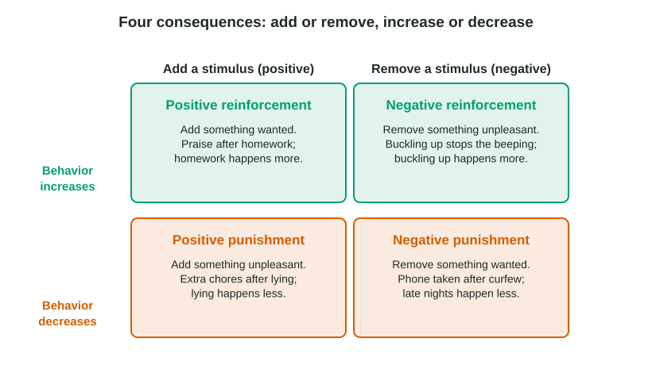

Classical conditioning explains reactions you do not choose, such as a flinch or a craving. Most of what you do, though, is chosen: studying, texting back, showing up on time. Those behaviors rise and fall with what happens after them. Learning from consequences is operant conditioning, because the behavior "operates" on the world to produce an outcome.
The law of effect
Around 1900, Edward Thorndike put hungry cats in puzzle boxes. At first a cat clawed and pushed at random until it happened to press the latch and escaped to food. Over many trials, the useless moves dropped out and the latch press came faster. Thorndike called this the law of effect: behaviors followed by satisfying consequences become more likely; behaviors followed by unpleasant ones become less likely. B. F. Skinner later built on it with the "Skinner box", a chamber where an animal presses a lever or pecks a key and its responses are counted automatically.
Four consequences

Reinforcement is any consequence that makes a behavior more likely; punishment is any consequence that makes it less likely. "Positive" and "negative" do not mean good and bad. They are signs: positive means a stimulus is added, negative means one is removed.
| Stimulus added (positive) | Stimulus removed (negative) | |
|---|---|---|
| Behavior increases (reinforcement) | Positive reinforcement: a bonus for good sales | Negative reinforcement: taking an aspirin ends a headache |
| Behavior decreases (punishment) | Positive punishment: extra chores for lying | Negative punishment: losing game time for hitting a sibling |
Worked example: name the consequence. Whenever Kai whines in the checkout line, his dad hands him candy to quiet him, and Kai stops whining. Two behaviors change here, so take them one at a time.
- Kai's whining. It is followed by candy (something wanted is added). Over time, Kai whines more. Added plus increase: positive reinforcement.
- Dad's handing over candy. It is followed by the whining stopping (something unpleasant is removed). Dad hands over candy more often. Removed plus increase: negative reinforcement.
The method: name the behavior, decide whether it goes up or down, then whether a stimulus was added or removed. Never start from whether the consequence "feels" good or bad.
Punishment can stop a behavior quickly, but it has costs. It shows what not to do without teaching what to do, its effect often lasts only while the punisher is around, and physical punishment is linked to more aggression and fear in children. Reinforcing a better behavior usually works better.
What counts as a reward
Primary reinforcers satisfy biological needs: food, water, warmth, relief from pain. Secondary reinforcers, also called conditioned reinforcers, gain their power by being linked to primary ones: money, grades, points, stamps and praise.
Building behavior, and its limits
An animal rarely does a complex behavior by chance, so trainers use shaping: reinforce a rough first step, then only closer and closer approximations, until the full behavior appears. Three findings show the limits of reinforcement:
- Instinctive drift. Keller and Marian Breland trained animals for shows and found that trained behaviors can slide back toward instinct: a pig taught to drop coins in a bank began rooting them along the ground.
- Superstitious behavior. Reinforcement strengthens whatever came just before it, even by accident. Skinner gave pigeons food at set times regardless of what they did, and many repeated whatever they had been doing at the moment food arrived. Lucky socks work the same way.
- Learned helplessness. Martin Seligman found that dogs given shocks they could not escape later failed to escape shocks they easily could. People who face repeated failures they cannot control may stop trying even when effort would now pay off.
Schedules of reinforcement
Continuous reinforcement rewards every response. It is the fastest way to teach a new behavior, but the behavior also stops quickly once rewards end, because the change is easy to notice. Partial reinforcement (intermittent reinforcement) rewards only some responses. Learning is slower, but the behavior lasts much longer once rewards stop: a run of failures is normal on a partial schedule, so it does not signal the end.
| Schedule | Reward comes after | Typical pattern | Example |
|---|---|---|---|
| Fixed-ratio | a set number of responses | fast, with a short pause after each reward | paid per 20 boxes packed |
| Variable-ratio | an unpredictable number of responses | fastest and steadiest; hardest to extinguish | slot machines, sales calls |
| Fixed-interval | the first response after a set time | slow after each reward, faster near the time (scallops) | checking the oven near the end of baking |
| Variable-interval | the first response after an unpredictable time | slow and steady | checking for a new post or a text |
Why do ratio schedules produce faster responding? On a ratio schedule, more responses bring the reward sooner. On an interval schedule, the clock decides, so responding faster earns little. In a cumulative record, which plots the running total of responses over time, a steeper line means faster responding and a flat stretch means a pause.
Classical and operant conditioning side by side
| Classical | Operant | |
|---|---|---|
| What is linked | two stimuli (a signal and what it predicts) | a behavior and its consequence |
| Kind of response | automatic, reflex-like (salivating, fear) | voluntary, chosen (studying, pressing) |
| What comes first | the stimulus, then the response | the behavior, then the consequence |
| Extinction | the CS comes without the UCS | the behavior is no longer reinforced |